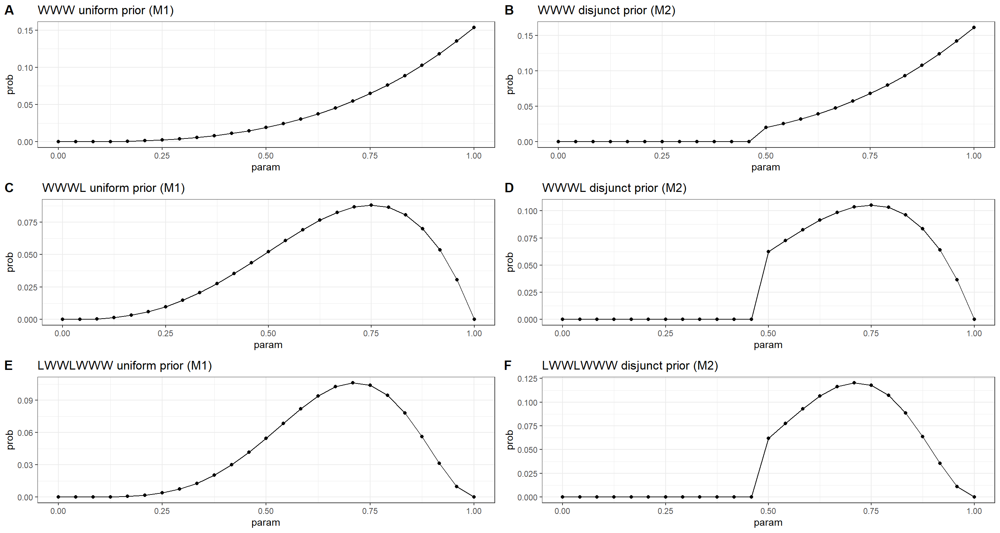

Chapter 01 & 02
Small Worlds in Large Worlds
Material
Introduction
These are answers and solutions to the exercises at the end of chapter 2 in Satistical Rethinking 2 by Richard McElreath. I have created these notes as a part of my ongoing involvement in the AU Bayes Study Group. Much of my inspiration for these solutions, where necessary, has been obtained from Taras Svirskyi and Jeffrey Girard.
Easy Exercises
Practice E1
Question: Which of the expressions below correspond to the statement: the probability of rain on Monday?
- $Pr(rain)$
- $Pr(rain|Monday)$
- $Pr(Monday|rain)$
- $\frac{Pr(rain,Monday)}{Pr(Monday)}$
Answer:
- 2, $Pr(rain|Monday)$ - reads as “the probability of rain, given that it is Monday”.
- 4, $\frac{Pr(rain|Monday)}{Pr(Monday)}$ - reads as “the probability that is raining and a Monday, divided by the probability of it being a Monday” which is the same as “the probability of rain, given that it is Monday. This is simply just the Bayes theorem in action.
Practice E2
Question: Which of the following statements corresponds to the expression: $Pr(Monday|rain)$?
- The probability of rain on Monday.
- The probability of rain, given that it is Monday.
- The probability that it is Monday, given that it is raining.
- The probability that it is Monday and that it is raining.
Answer:
- 3, The probability that it is Monday, given that it is raining.
Practice E3
Question: Which of the expressions below correspond to the statement: the probability that it is Monday, given that it is raining?
- $Pr(Monday|rain)$
- $Pr(rain|Monday)$
- $Pr(rain|Monday)Pr(Monday)$
- $\frac{Pr(rain|Monday)Pr(Monday)}{Pr(rain)}$
- $\frac{Pr(Monday|rain)Pr(rain)}{Pr(Monday)}$
Answer:
- 1, $Pr(Monday|rain)$
- 4, $\frac{Pr(rain|Monday)Pr(Monday)}{Pr(rain)}$
Practice E4
Question: The Bayesian statistician Bruno de Finetti (1906-1985) began his book on probability theory with the declaration: “PROBABILITY DOES NOT EXIST.” The capitals appeared in the original, so I imagine de Finetti wanted us to shout the statement. What he meant is that probability is a device for describing uncertainty from the perspective of an observer with limited knowledge; it has no objective reality. Discuss the globe tossing example from the chapter, in light of this statement. What does it mean to say “the probability of water is 0.7”?
Answer:
- Completely uninformed and looking only at random samples, we would come to the conclusion that 70% of the Earth are covered by water. However, this estimate could be heavily biased once confounding factors are taken into account. Factors such as inaccuracy of the globe model we are tossing when compared to the real globe (i.e. the model is perfectly spherical, but the Earth itself is a flattened ellipsoid).
Medium Exercises
This is where we get into R application of Bayes. Here, I load a few packages to make my outputs a bit nicer to look at:
rm(list = ls())
library(ggplot2)
library(cowplot)
Practice M1 & M2
Question: Recall the globe tossing model from the chapter. Compute and plot the grid approximate posterior distribution for each of the following sets of observations. In each case, assume a uniform prior for p.
- W,W,W
- W,W,W,L
- L,W,W,L,W,W,W
Now assume a prior for p that is equal to zero when p<0.5 and is a positive constant when p≥0.5. Again compute and plot the grid approximate posterior distribution for each of the sets of observations in the problem just above.
Answer:
# Register the data we observed
data1 <- c("W", "W", "W")
data2 <- c("W", "W", "W", "L")
data3 <- c("L", "W", "W", "L", "W", "W", "W")
data_ls <- list(data1, data2, data3)
names(data_ls) <- c(paste(data1, collapse = ""), paste(data2, collapse = ""), paste(data3, collapse = ""))
# Define grid to sample
p_grid <- seq(0, 1, length.out = 25)
ng <- length(p_grid)
# Register the priors
priors_ls <- list(NA, NA)
names(priors_ls) <- c("uniform prior (M1)", "disjunct prior (M2)")
priors_ls[[1]] <- rep(1, ng)
priors_ls[[2]] <- ifelse(p_grid < 0.5, 0, 1)
# Generate a list within which to store plots for later output all together
plot_ls <- as.list(rep(NA, length(data_ls) * length(priors_ls)))
counter <- 1
# Calculate Posteriors
for (i in 1:length(data_ls)) { # loop over data sets
data <- data_ls[[i]] # extract data from list
n <- length(data) # number of observations
w <- sum(data == "W") # number of observed water
for (k in 1:length(priors_ls)) { # loop over priors
prior <- priors_ls[[k]] # extract prior
likelihood <- dbinom(w, n, p_grid) # calculate likelihood of water in grid
posterior <- likelihood * prior # compute posterior
posterior <- posterior / sum(posterior) # standardise posterior
# save data to data frame for ggplot
df <- data.frame(
param = p_grid,
prob = posterior,
ptype = rep("posterior", ng)
)
# ggplotting to plot list
plot_ls[[counter]] <- ggplot(df, aes(x = param, y = prob)) +
geom_line() +
geom_point() +
theme_bw() +
labs(title = paste(names(data_ls)[i], names(priors_ls)[k], sep = " "))
counter <- counter + 1
} # end of priors loop
} # end of data set loop
plot_grid(plotlist = plot_ls, ncol = 2, labels = "AUTO")

Practice M3
Question: Suppose there are two globes, one for Earth and one for Mars. The Earth globe is 70% covered in water. The Mars globe is 100% land. Further suppose that one of these globes–you don’t know which–was tossed in the air and produces a “land” observation. Assume that each globe was equally likely to be tossed. Show that the posterior probability that the globe was the Earth, conditional on seeing “land” ($Pr(Earth|land)$), is 0.23.
Answer:
From the question, we know that:
- $P(land|Earth) = 1-0.7 = 0.3$
- $P(land|Mars) = 1$
- $P(Earth) = P(Mars) = .5$
According to Bayes' theorem, we know that:
$P(Earth|Land) = \frac{P(land|Earth)P(Earth)}{P(land)}$
Conclusively, we are only missing $P(land)$ which we can calculate from:
$P(land) = P(land|Earth)P(Earth)+P(land|Mars)Pr(Mars)$
$= 0.30.5+10.5=0.65$
Finally, we plug all these values into the above Bayes' theorem and obtain: $P(Earth|Land) = \frac{0.3*0.5}{0.65} = 0.2307692$
In R, we can do this:
(p_e_l <- (1 - 0.7) * 0.5 / ((1 - 0.7) * 0.5 + 1. * 0.5))
## [1] 0.2307692
Practice M4
Question: Suppose you have a deck with only three cards. Each card has two sides, and each side is either black or white. One card has two black sides. The second card has one black and one white side. The third card has two white sides. Now suppose all three cards are placed in a bag and shuffled. Someone reaches into the bag and pulls out a card and places it flat on a table. A black side is shown facing up, but you don’t know the colour of the side facing down. Show that the probability that the other side is also black is 2/3. Use the counting method (Section 2 of the chapter) to approach this problem. This means counting up the ways that each card could produce the observed data (a black card facing up on the table).
Answer:
I made a small visualisation of this here:

By Counting:
As you can see, out of all draws that start with a black side facing up on the first draw (3 total paths), only two conclude to the other side also being black. Thus, the probability is two thirds.
Bayes' Theorem:
$P(Second = B|First = B) = \frac{P(Second = B, First = B)}{P(First = B)} = \frac{P(BB)}{P(BB)+P(WB)*P(First = B|WB)}$
$= \frac{1/3}{(1/3 + 1/3 * 1/2)} = 2/3$
Via R:
bb.ways <- 2
wb.ways <- 1
ww.ways <- 0
likelihood <- c(bb.ways, wb.ways, ww.ways)
prior <- c(1, 1, 1)
posterior <- prior * likelihood
posterior <- posterior / sum(posterior)
posterior[1] == 2 / 3
## [1] TRUE
Practice M5
Question: Now suppose there are four cards: BB, BW, WW, and another BB. Again suppose a card is drawn from the bag and a black side appears face up. Again calculate the probability that the other side is black.
Answer:
Here’s an update of my previous visualisation for this:

By Counting:
As you can see, out of all draws that start with a black side facing up on the first draw (5 total paths), four conclude to the other side also being black. Thus, the probability is 4/5 which is 0.8.
Bayes' Theorem:
$P(Second = B|First = B) = \frac{P(Second = B, First = B)}{P(First = B)} = \frac{P(BB)}{P(BB)+P(WB)*P(First = B|WB)}$
$=\frac{1/2}{(1/2 + 1/4 * 1/2)} = 4/5$
Via R:
bb.ways <- 2
wb.ways <- 1
ww.ways <- 0
likelihood <- c(bb.ways, wb.ways, ww.ways)
prior <- c(2, 1, 1)
posterior <- prior * likelihood
posterior <- posterior / sum(posterior)
posterior[1] == 4 / 5
## [1] TRUE
Practice M6
Question: Imagine that black ink is heavy, and so cards with black sides are heavier than cards with white sides. As a result, it’s less likely that a card with black sides is pulled from the bag. So again assume that there are three cards: BB, BW, and WW. After experimenting a number of times, you conclude that for every way to pull the BB card from the bag, there are 2 ways to pull the BW card and 3 ways to pull the WW card. Again suppose that a card is pulled and a black side appears face up. Show that the probability the other side is black is now 0.5. Use the counting method, as before.
Answer:
Here’s an update of my previous visualisation for this:

By Counting:
Out of all draws that start with a black side facing up on the first draw (4 total paths), only 2 now conclude to the other side also being black. Thus, the probability is 1/2 which is 0.5.
Bayes' Theorem:
$P(Second = B|First = B) = \frac{P(Second = B, First = B)}{P(First = B)} = \frac{P(BB)}{P(BB)+P(WB)*P(First = B|WB)}$
$= \frac{1/6}{(1/6 + 2/6 * 1/2)} = 1/2$
Via R:
bb.ways <- 2
wb.ways <- 1
ww.ways <- 0
likelihood <- c(bb.ways, wb.ways, ww.ways)
prior <- c(1, 2, 3)
posterior <- prior * likelihood
posterior <- posterior / sum(posterior)
posterior[1] == 0.5
## [1] TRUE
Practice M7
Question: Assume again the original card problem, with a single card showing a black side face up. Before looking at the other side, we draw another card from the bag and lay it face up on the table. The face that is shown on the new card is white. Show that the probability that the first card, the one showing a black side, has black on its other side is now 0.75. Use the counting method, if you can. Hint: Treat this like the sequence of globe tosses, counting all the ways to see each observation, for each possible first card.
Answer:
Here’s an update of my previous visualisation for this:

By Counting:
Out of all draws that start with a black side facing up on the first draw (12 total paths), 8 now conclude to the next card being places white-side facing up. Thus, the probability is 8/12 which is 0.75.
Via R:
card.bb.likelihood <- 2 * 3 # bb pulled first (either side), next card is ww (either side) or wb (white-side up)
card.wb.likelihood <- 1 * 2 # wb pulled black side up, next card is ww (either side)
card.ww.likelihood <- 0
likelihood <- c(card.bb.likelihood, card.wb.likelihood, card.ww.likelihood)
prior <- c(1, 1, 1)
posterior <- prior * likelihood
posterior <- posterior / sum(posterior)
posterior[1] == 0.75
## [1] TRUE
Hard Exercises
Practice H1
Question: Suppose there are two species of panda bear. Both are equally common in the wild and live in the same place. They look exactly alike and eat the same food, and there is yet no genetic assay capable of telling them apart. They differ however in family sizes. Species A gives birth to twins 10% of the time, otherwise birthing a single infant. Species B births twins 20% of the time, otherwise birthing singleton infants. Assume these numbers are known with certainty, from many years of field research. Now suppose you are managing a captive panda breeding program. You have a new female panda of unknown species, and she has just given birth to twins. What is the probability that her next birth will also be twins?
Answer:
By Hand:
From the question, we know that:
- $Pr(twins|A)=0.1$
- $Pr(twins|B)=0.2$
- $Pr(A)=0.5$
- $Pr(B)=0.5$
We know want to calculate $Pr(twins)$ which is given as:
$Pr(twins)=Pr(twins|A)Pr(A)+Pr(twins|B)Pr(B)$
For this, however, we need to know the probability of our individual belonging to species A or B, respectively. For this, we will use the Bayes' Theorem:
$Pr(A|twins)=\frac{Pr(twins|A)Pr(A)}{Pr(twins)}=\frac{0.1*(0.5)}{0.15}=1/3$
$Pr(B|twins)=\frac{Pr(twins|B)Pr(B)}{Pr(twins)}=\frac{0.2*(0.5)}{0.15}=2/3$
These values can be used as $Pr(A)$ and $Pr(B)$ respectively in the formula to compute $Pr(twins)$ above as such:
$Pr(twins) = 0.11/3 + 0.22/3 = 1/6$
In R:
p_twins_A <- 0.1
p_twins_B <- 0.2
likelihood <- c(p_twins_A, p_twins_B)
prior <- c(1, 1)
posterior <- prior * likelihood
posterior <- posterior / sum(posterior)
sum(posterior * likelihood) == 1 / 6
## [1] TRUE
Practice H2
Question: Recall all the facts from the problem above. Now compute the probability that the panda we have is from species A, assuming we have observed only the first birth and that it was twins.
Answer: We already now from our answer above that it is 1/3.
By Hand:
$Pr(A|twins)=\frac{Pr(twins|A)Pr(A)}{Pr(twins)}=\frac{0.1*(0.5)}{0.15}=1/3$
In R:
p_twins_A <- 0.1
p_twins_B <- 0.2
likelihood <- c(p_twins_A, p_twins_B)
prior <- c(1, 1)
posterior <- prior * likelihood
posterior <- posterior / sum(posterior)
posterior[1] # 0.33
## [1] 0.3333333
Practice H3
Question: Continuing on from the previous problem, suppose the same panda mother has a second birth and that it is not twins, but a singleton infant. Compute the posterior probability that this panda is species A.
Answer:
By Hand:
The probability of birthing singleton infants given a certain species-membership is given by:
$Pr(single|A)=1–Pr(twins|A)=1–0.1=0.9$
$Pr(single|B)=1–Pr(twins|B)=1–0.2=0.8$
We already know species membership probability given the first birth having been a twin-birth:
$Pr(A)=1/3$
$Pr(B)=2/3$
Next, we require the probability of a singleton birth overall, which we calculate as follows:
$Pr(single)=Pr(single|A)Pr(A)+Pr(single|B)Pr(B)$
$=0.9(1/3)+0.8(2/3)=5/6$
Finally, we are ready to use the Bayes' Theorem:
$Pr(A|single)=\frac{Pr(single|A)Pr(A)}{Pr(single)}=\frac{0.9(1/3)}{5/6}=0.36$
In R:
## TWO STEPS WITH UPDATING
p_twins_A <- 0.1
p_twins_B <- 0.2
# first Bayesian update
likelihood_twins <- c(p_twins_A, p_twins_B)
prior <- c(1, 1)
posterior <- prior * likelihood_twins
posterior <- posterior / sum(posterior)
# second Bayesian update
likelihood_single <- c(1 - p_twins_A, 1 - p_twins_B)
prior <- posterior
posterior <- prior * likelihood_single
posterior <- posterior / sum(posterior)
posterior[1] == 0.36
## [1] FALSE
## IN ONE STEP
p_twins_A <- 0.1
p_twins_B <- 0.2
# likelihood of two events (p(twins_step1 & single_step2|species=X))
likelihood_twins_single <- c(
p_twins_A * (1 - p_twins_A),
p_twins_B * (1 - p_twins_B)
)
prior <- c(1, 1)
posterior <- prior * likelihood_twins_single
posterior <- posterior / sum(posterior)
posterior[1] == 0.36
## [1] TRUE
Practice H4
Question: A common boast of Bayesian statisticians is that Bayesian inferences makes it easy to use all of the data, even if the data are of different types. So suppose now that a veterinarian comes along who has a new genetic test that she claims can identify the species of our mother panda. But the test, like all tests, is imperfect. This is the information you have about the test:
- The probability it correctly identifies a species A panda is 0.8.
- The probability it correctly identifies a species B panda is 0.65.
The vet administers the test to your panda and tells you that the test is positive for species A. First ignore your previous information from the births and compute the posterior probability that your panda is species A. Then redo your calculation, now using the birth data as well.
Answer:
By Hand:
Again, the question hands us some information:
- $Pr(+A|A)=0.8$
- $Pr(+A|B)=1 − 0.65 = 0.35$
Importantly here, the test was positive for species A. I had previously overlooked this. Thanks to Aramis Farias for pointing this out to me!
Currently, we have to assume that both species are equally likely here:
- $Pr(A)=0.5$
- $Pr(B)=0.5$
Now, to calculate $Pr(A|+)$, we require $Pr(+)$:
$Pr(+)=Pr(+|A)Pr(A)+Pr(+|B)Pr(B)$
$=0.8(0.5)+0.35(0.5)=0.575$
Finally, we calculate $Pr(A|+)$: $Pr(A|+)=\frac{Pr(+A|A)Pr(A)}{Pr(+)}=\frac{0.8(0.5)}{0.575}\sim 0.6987$
Taking into account our previous knowledge on births, we have to set:
- $Pr(A)=0.36$
- $Pr(B)=1-Pr(A)=0.64$
We plug these values into the formulae above and obtain:
$Pr(+)=Pr(+|A)Pr(A)+Pr(+|B)Pr(B)$
$=0.8(0.36)+0.35(0.64)=0.512$
Finally, we calculate $Pr(A|+)$: $Pr(A|+)=\frac{Pr(+A|A)Pr(A)}{Pr(+)}=\frac{0.8(0.36)}{0.512}=0.5625$
Given our test alone, we are probably overestimating assignment to species A, here.
In R:
# WITHOUT BIRTH-INFORMATION
likelihood_test <- c(0.8, 0.35)
prior <- c(1, 1)
posterior_vet <- prior * likelihood_test
posterior_vet <- posterior_vet / sum(posterior_vet)
posterior_vet[1]
## [1] 0.6956522
# WITH BIRT-INFORMATION
p_twins_A <- 0.1
p_twins_B <- 0.2
# likelihood of two events (p(twins_step1 & single_step2|species=X))
likelihood_twins_single <- c(
p_twins_A * (1 - p_twins_A),
p_twins_B * (1 - p_twins_B)
)
prior <- posterior_vet
posterior <- prior * likelihood_twins_single
posterior <- posterior / sum(posterior)
posterior[1]
## [1] 0.5625
Session Info
sessionInfo()
## R version 4.2.3 (2023-03-15)
## Platform: x86_64-apple-darwin17.0 (64-bit)
## Running under: macOS Big Sur ... 10.16
##
## Matrix products: default
## BLAS: /Library/Frameworks/R.framework/Versions/4.2/Resources/lib/libRblas.0.dylib
## LAPACK: /Library/Frameworks/R.framework/Versions/4.2/Resources/lib/libRlapack.dylib
##
## locale:
## [1] en_US.UTF-8/en_US.UTF-8/en_US.UTF-8/C/en_US.UTF-8/en_US.UTF-8
##
## attached base packages:
## [1] stats graphics grDevices utils datasets methods base
##
## other attached packages:
## [1] cowplot_1.1.1 ggplot2_3.4.1
##
## loaded via a namespace (and not attached):
## [1] highr_0.10 bslib_0.4.2 compiler_4.2.3 pillar_1.8.1 jquerylib_0.1.4 R.methodsS3_1.8.2 R.utils_2.12.2 tools_4.2.3 digest_0.6.31 jsonlite_1.8.4
## [11] evaluate_0.20 lifecycle_1.0.3 tibble_3.2.1 gtable_0.3.1 R.cache_0.16.0 pkgconfig_2.0.3 rlang_1.1.0 cli_3.6.0 rstudioapi_0.14 yaml_2.3.7
## [21] blogdown_1.16 xfun_0.37 fastmap_1.1.1 withr_2.5.0 dplyr_1.1.0 styler_1.9.1 knitr_1.42 generics_0.1.3 vctrs_0.6.1 sass_0.4.5
## [31] tidyselect_1.2.0 grid_4.2.3 glue_1.6.2 R6_2.5.1 fansi_1.0.4 rmarkdown_2.20 bookdown_0.33 farver_2.1.1 purrr_1.0.1 magrittr_2.0.3
## [41] scales_1.2.1 htmltools_0.5.4 colorspace_2.1-0 labeling_0.4.2 utf8_1.2.3 munsell_0.5.0 cachem_1.0.7 R.oo_1.25.0